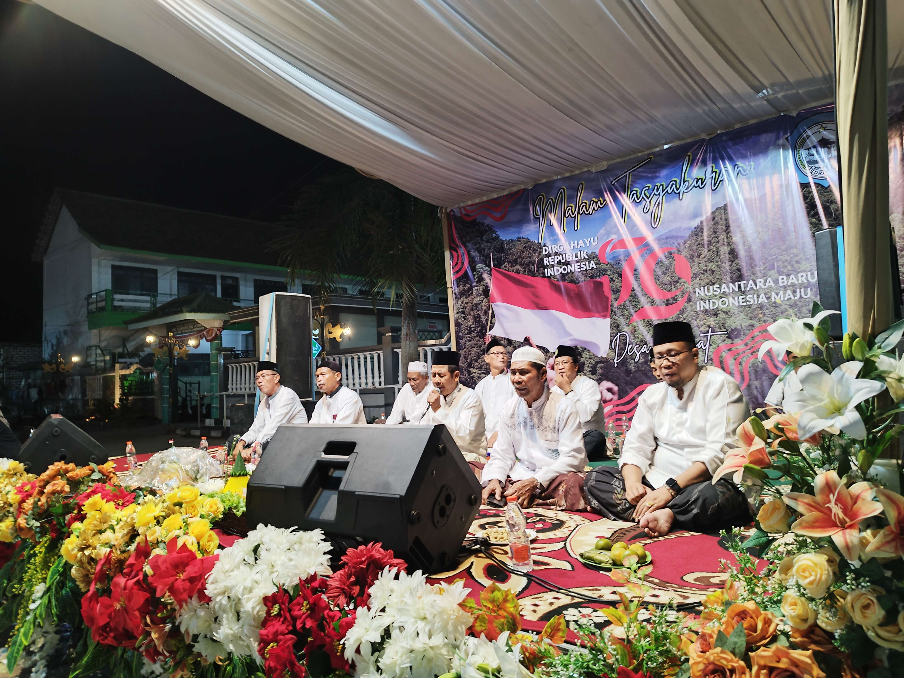
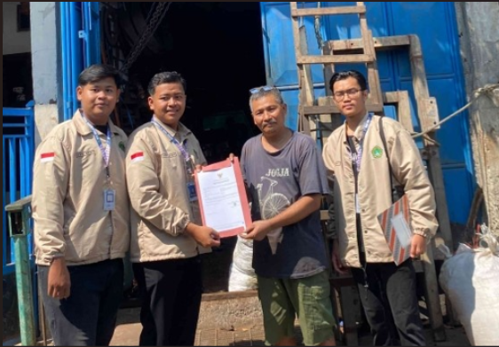
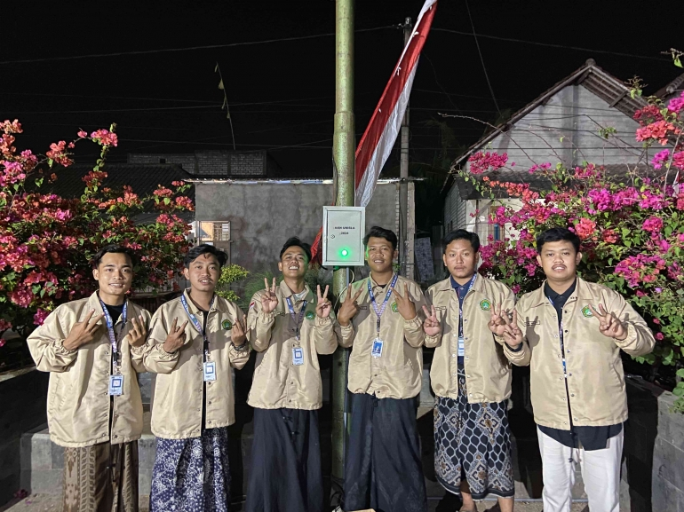
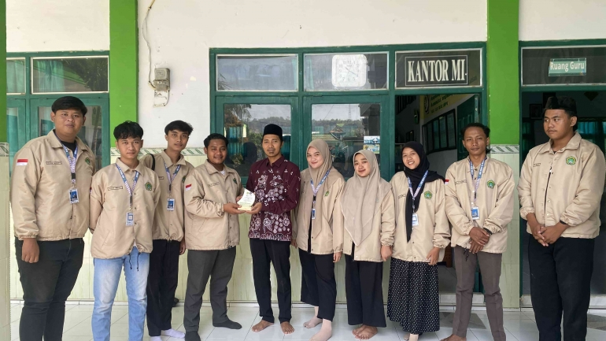
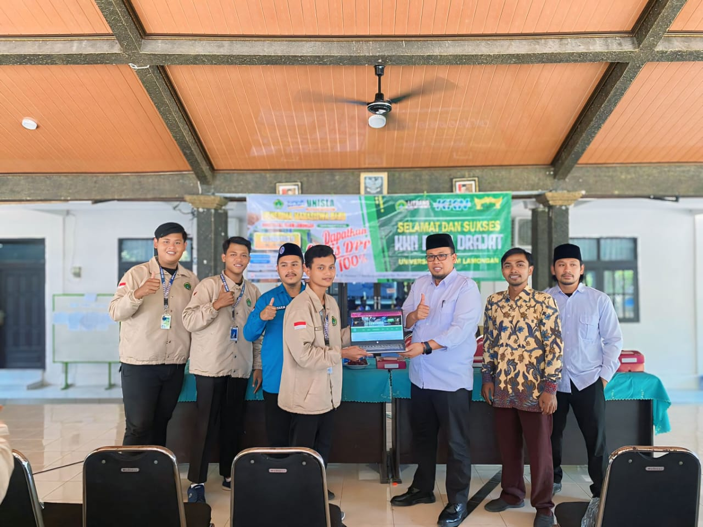

Kisah Sunan Drajat, Selamat Dihantam Ombak Hingga Merubah Desa Mati
Menjadi Ramai
Tanggal Publikasi: 2 Juli 2021
.png)
Pada saat Sunan Bonang baru menginjak usia lima tahun, lahirlah adik
laki-lakinya pada tahun 1470 masehi, bayi tersebut diberinama Raden
Qasim.
Baca selengkapnya
Kisah Pertemuan Sunan Sendangduwur dengan Sunan Drajat Paciran
Lamongan
Tanggal Publikasi: 3 Desember 2022
.png)
Selain Makam Sunan Drajat, di Paciran Lamongan juga terdapat
destinasi wisata religi yaitu Makam Sunan Sendang. Sunan Sendang
adalah seorang wali yang menyebarkan Islam di Desa Sendangduwur,
Kecamatan Paciran, Lamongan.
Baca selengkapnya
Pembukaan KKN Mahasiswa Unisla di Desa Drajat
Tanggal Publikasi: 12 Agustus 2024

Pembukaan Kuliah Kerja Nyata (KKN) Mahasiswa Universitas Islam
Lamongan (UNISLA) kelompok 22 dilaksanakan di Kantor Desa Drajat,
Senin, 5 Agustus 2024., Kegiatan ini dilaksanakan pagi hari.
Bertempat di Balai Desa Drajat
Baca selengkapnya
MALAM TASYAKURAN DIRGAHAYU REPUBLIK INDONESIA KE 79 DESA DRAJAT
Tanggal Publikasi: 16 Agustus 2024

Mahasiswa Kuliah Kerja Nyata (KKN) Universitas Islam Lamongan
kelompok 22, turut serta dalam tasyakuran peringatan malam 17
agustus yang diadakan oleh pemerintah desa Drajat, yang bertempat di
Alun-Alun Desa Drajat, Jum'at 16 Agustus 2024.
Baca selengkapnya
Pendampingan Pembuatan NIB Mahasiswa UNISLA Kepada Pelaku UMKM Desa Drajat
Tanggal Publikasi: 28 Agustus 2024

Mahasiswa Kuliah Kerja Nyata (KKN) Universitas Islam Lamongan, melakukan pendampingan pembuatan NIB kepada para pelaku UMKM yang ada di desa Drajat. Kegiatan ini merupakan giat pengabdian masyarakat guna terjaminya legalitas produk dari pelaku usaha yang ada di desa drajat.
Baca selengkapnya
Pembuatan Alat Penyiraman Secara Otomatis Oleh Mahasiswa KKN UNISLA Pada Alun-Alun Desa DRAJAT
Tanggal Publikasi: 28 Agustus 2024

Mahasiswa Kuliah Kerja Nyata (KKN) Universitas Islam Lamongan, membuat alat penyiaman taman secara otomatis pada taman alun-alun di desa Drajat. Kegiatan ini merupakan  pengabdian masyarakat guna menunjang effisiensi waktu saat melakukan penyiraman taman secara manual di desa drajat.
Baca selengkapnya
Mahasiswa KKN UNISLA Kelompok 22 Melakukan Suatu Bentuk Pengabdian dengan Membantu Tenaga Pengajar di MI Tarbiyatul Athfal
Tanggal Publikasi: 28 Agustus 2024

Mahasiswa Kuliah Kerja Nyata (KKN) Universitas Islam Lamongan, melakukan pengabdian di MI TARBIYATUL ATHFAL.
Kelompok 22 UNISLA Desa Drajat melakukan program kerja berupa pengabdian masyarakat dengan membantu proses pengajaran pembelajaran di MI TARBIYATUL ATHFAL Desa Drajat.
Baca selengkapnya
Mengabdi Untuk Negeri, Kkn 22 Unisla Desa Drajat Melakukan Pengabdian Di Balai Desa Drajat
Tanggal Publikasi: 2 September 2024

Kelompok 22 KKN UNISLA Desa Drajat melakukan Program Kerja berupa pengabdian masyarakat dengan membantu proses administrasi di Balai Desa Drajat.
Baca selengkapnya